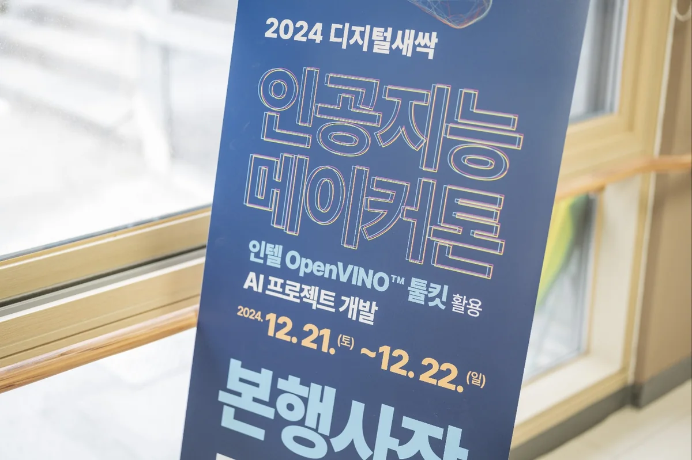
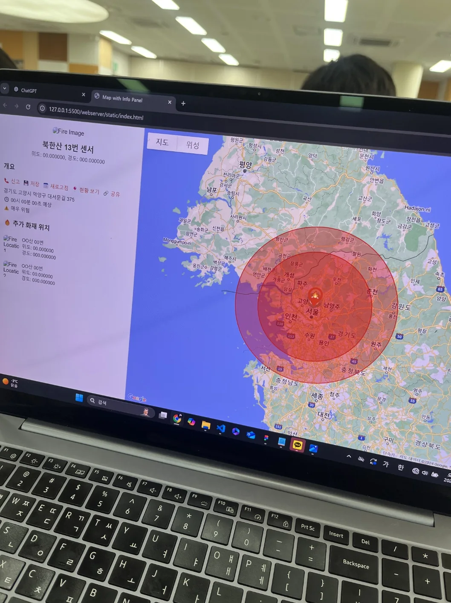
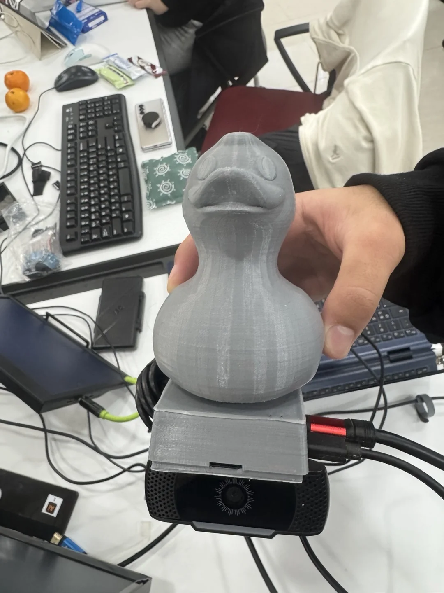

프로젝트 개요
2024 디지털새싹 인공지능 메이커톤에서 'AI 어벤져스상'을 수상한 프로젝트입니다. 라즈베리파이와 OpenCV를 활용해 산불 화재를 실시간으로 감지한 즉시 알림을 전송하는 시스템을 개발했습니다.
주요 기능 / 내용
- 라즈베리파이 + 카메라 모듈로 실시간 영상 처리
- OpenCV 기반 화재/연기 색상 감지 알고리즘
- 임계값 이상 감지 시 알림 발송 시스템
- 원격 모니터링 대시보드 구현
- 2024 디지털새싹 AI 어벤져스상 수상
프로젝트 사진



나의 역할
팀원 (엔지니어) · 4인 팀
- 라즈베리파이 세팅
- 3D 모델링 및 케이스 제작
- 발표
- 그 외 다수